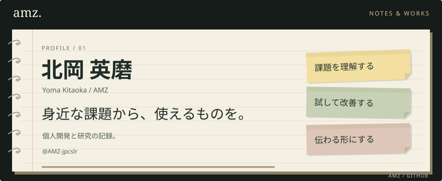
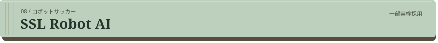

自己紹介
PdMを目指し、個人開発と個人研究に取り組んでいます。身近な不便や友人との会話をきっかけに、WebアプリやDiscord Botをつくり、使う人の声を聞きながら改善しています。AIの行動前の影響評価や、ロボットサッカーの位置評価にも取り組んできました。
使っている技術
つくったもの
つくった理由や工夫は、ポートフォリオの各作品ページにまとめています。
いつもの駅の時刻表と、駅まで歩く時間をもとに、次に乗れる電車の目安を表示するアプリです。
React TypeScript Vite
詳しく読む ↗ · コードを見る ↗
公開募集を自分用に引用し、応募・締切・選考の予定をまとめて管理するWebアプリです。友人に使ってもらいながら改善しています。
Next.js TypeScript Supabase
詳しく読む ↗ · コードを見る ↗
テキスト・画像・時計を配置し、保存した画面をOBSへ出力できるエディターです。配信者からの依頼で制作しました。
JavaScript Node.js OBS
詳しく読む ↗ · コードを見る ↗
声を出せないときも会話に参加できるように、Discordのテキストを読み上げ、相手に合わせて翻訳するBotをつくりました。
TypeScript VOICEVOX DeepL
詳しく読む ↗ · コードを見る ↗
普段開いているDiscordで地震や気象の情報に気づけるように、通知を届けるBotをつくりました。
TypeScript WebSocket Node.js
詳しく読む ↗ · コードを見る ↗
行動前の予測と、影響を受ける当事者の評価を、AIの行動選択につなぐ仕組みを研究しています。固定ルールと合成シナリオで検証しています。
通信の内容と検出結果を可視化し、何がやり取りされているかを確認するためのプロキシです。
HTTP HTTPS Proxy
詳しく読む ↗ · コードを見る ↗


移動先やパス相手を考えるための位置評価シミュレーターです。位置評価の仕組みを、チームへの導入用プロトタイプとして活用してもらいました。
Java Simulation
詳しく読む ↗ · コードを見る ↗
大切にしていること
- 課題を理解する。 誰が、どんな場面で使うのかを考えます。
- 試して改善する。 小さく形にして、使う人の声を次の改善につなげます。
- 伝わる形にする。 必要な情報を見つけやすくし、迷わず判断できるようにします。
つくったものと、その過程を少しずつ記録しています。
AMZ — Notes & Works ↗